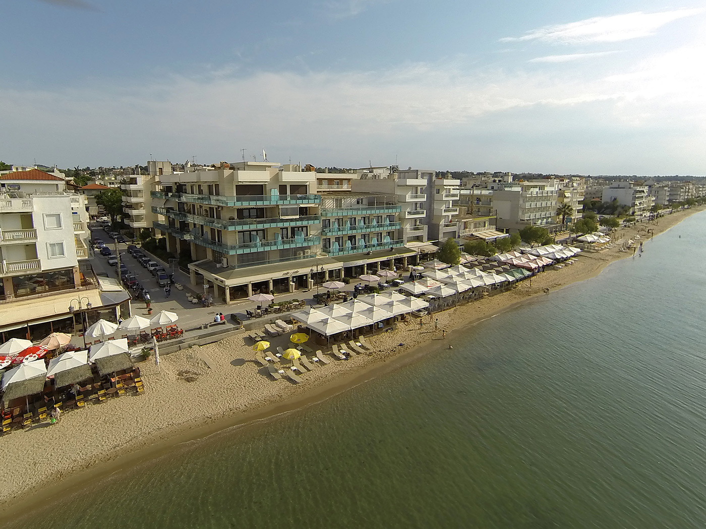
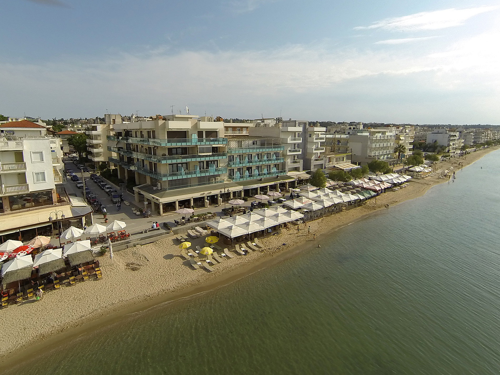
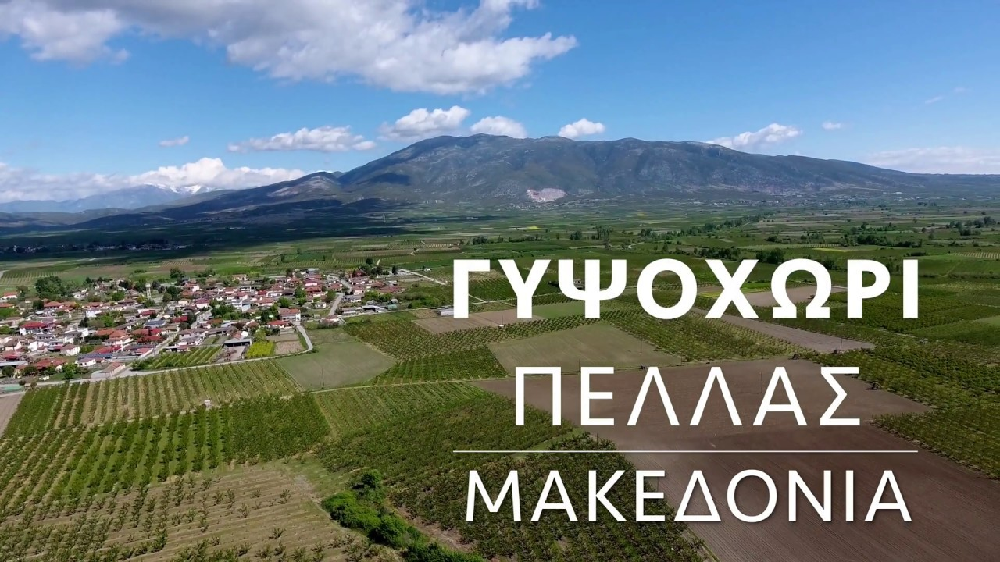
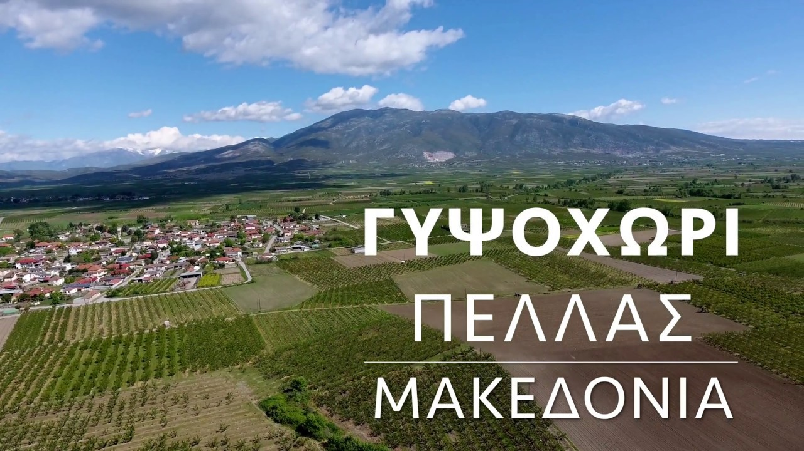
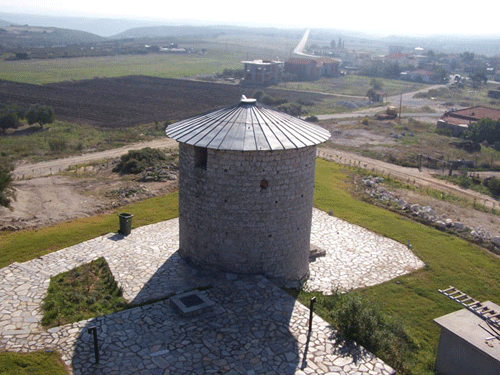
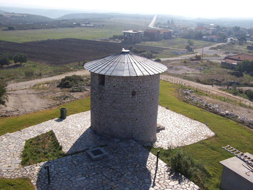

Αρχική
Βιογραφικά
Project
Επικοινωνία
Οδηγος Git
Γενική Αναφορά
Κωνσταντίνος Κεραμιτσής με ΑΜ:4123
Εχει βασικές γνώσεις c++,java αλλα και μεγάλη ενασχόληση με τις βάσεις δεδομένων και την sql.
Κατάγεται απο την Περαία Θεσσαλονίκης
 

Νίκος Δημητριάδης με ΑΜ:4071
Έχει αρκετές γνώσεις στην java και στην sql αλλά και στην c++ με διάφορα projects.
Κατάγεται απο το Γυψοχώρι Πέλλας.
 

Στέλιος Μπαρμπούνης με ΑΜ:4209
Ξέρει να χρησιμοποιεί άριστα την html και έχει αρκετά projects στην java.
Κατάγεται απο την Νέα Γωνιά Χαλκιδικής.
 
